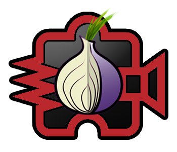

tor.noisebridge.net

Noisebridge has joined forces with
the Tor Project and the
EFF to create a program where people can donate
to a US-based non-profit organization and directly see their donations turn
into Tor exit nodes.
How does it work?
- Donate money to Noisebridge using the button below
- Noisebridge sets up Tor nodes
- Together we make the Internet a more free place!
How much does it cost? Is it working?
- Noisetor installed our first node on September 9, 2011.
- As of September 16, exit01 is pushing 105 Mbps of Tor relay traffic, ramping towards 500 Mbps (about 120 TB / month).
- exit01 costs us approximately $800 per month to operate. A $30 donation covers one day of operation!
- Providing an equivalent service on Amazon EC2 would cost around $10,000 per month.
How do I find out more?